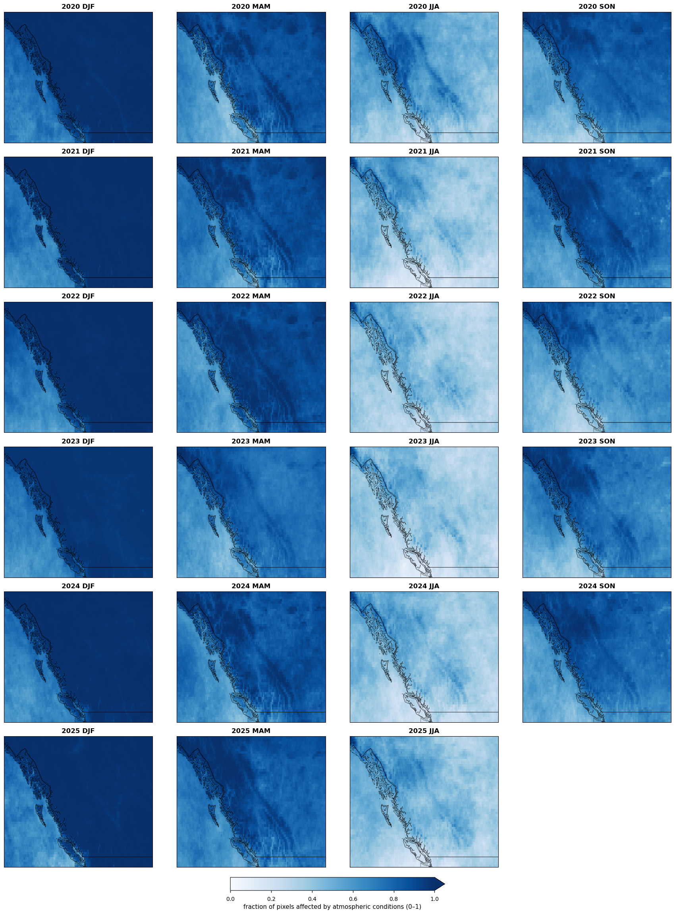
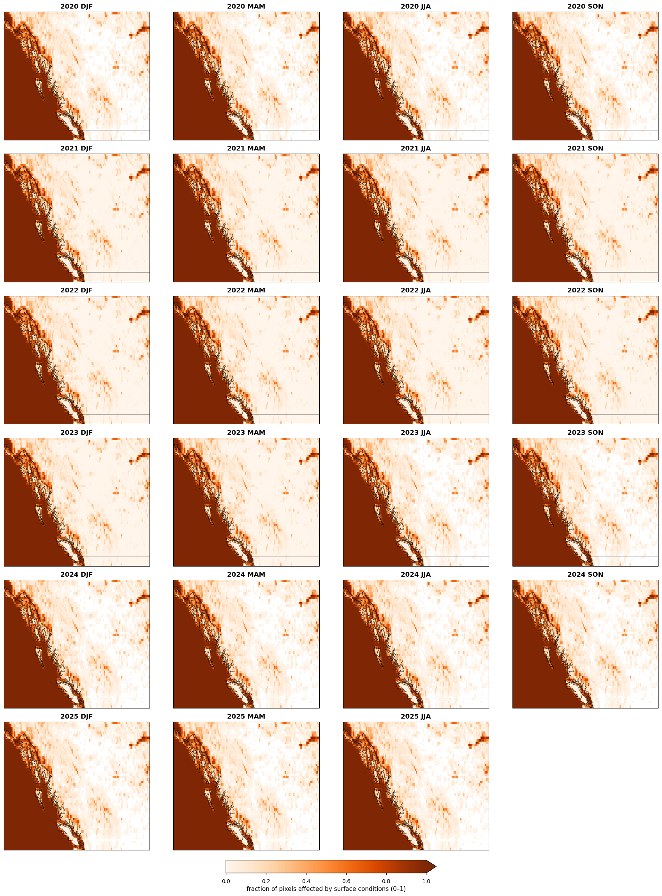
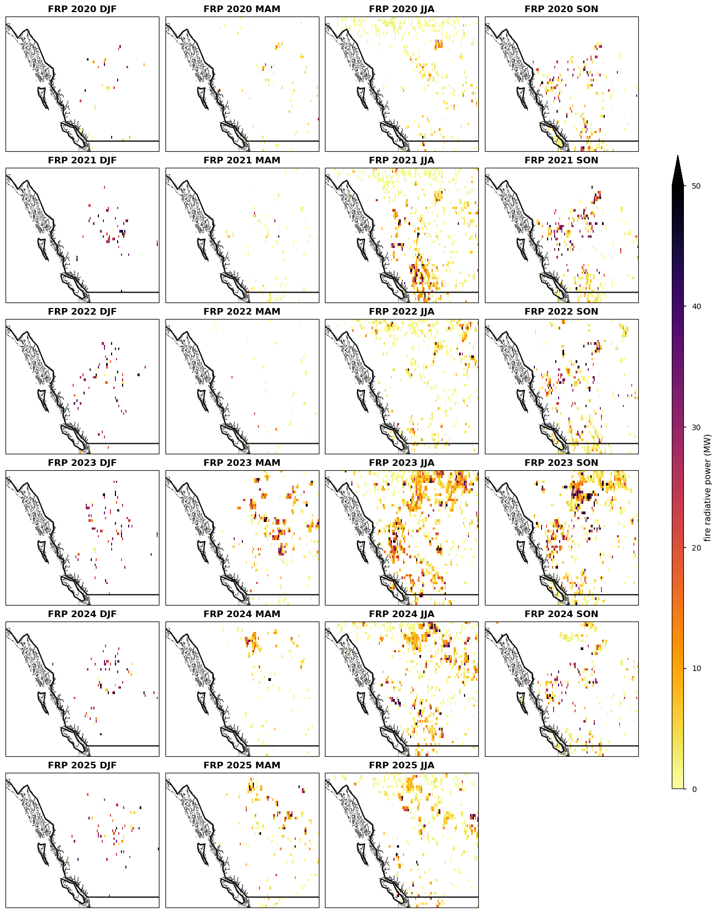
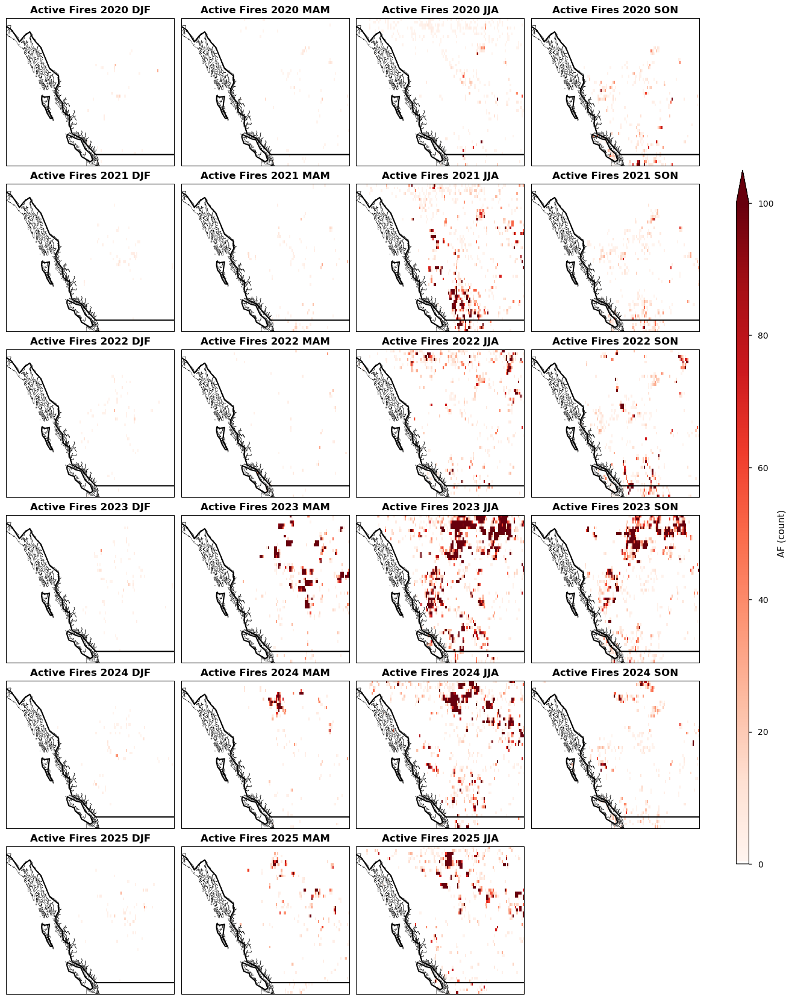
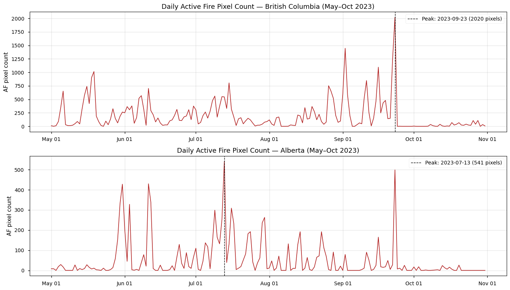

1.4.1. Assessing Fire Radiative Power Consistency from Satellite Observations: A Quality Evaluation of the C3S FRP Dataset over the Canadian Boreal Forests#
Production date: 07-05-2025
Produced by: Vitor Miranda & André Brito (CoLAB +ATLANTIC)
🌍 Use case: Regional wildfire monitoring and fire radiative power dataset evaluation#
❓ Quality assessment question#
Are the Fire Radiative Power (FRP) and Active Fire (AF) pixel counts from the C3S Sentinel-3 dataset spatially and temporally consistent with those reported in peer-reviewed literature over the Canadian Boreal Forests?
In this quality assessment, we assess the Fire Radiative Power (FRP, in megawatts (MW)) and Active Fire (AF, pixel counts) derived from the monthly gridded C3S Sentinel-3 product (version 1.2, 0.25° spatial resolution, combining day and night observations) available on the Climate Data Store (CDS) of the Copernicus Climate Change Service (C3S), covering the period January 2020 to February 2025. This dataset will be used to quantify the intensity and spatial distribution of biomass burning events across the Area of Interest (AoI), with the aim of evaluating the fitness of the C3S dataset for applications in forest management, carbon budget monitoring, and regional climate assessment.
The analysis focuses on the Canadian boreal forests, with particular attention to the provinces of British Columbia and Alberta (Figures 1 and 2), which experienced exceptional wildfire activity during the 2023–2024 fire season. Recent “State of Wildfires” reports ([1] and [2]) have consistently identified this region as one of the most extreme wildfire-affected areas on record, with fire carbon emissions during 2023–2024 exceeding nine times the long-term average, unprecedented burned area extent, and fire intensity driven by anomalously high fire weather conditions and an abundance of dry fuels — trends partially attributed to anthropogenic climate change. Focusing on this region therefore allows the global C3S product to be evaluated where fire intensity reached record levels within the C3S observation period, and where improvements in understanding fire radiative power dynamics are particularly urgent and societally relevant. The full C3S record (January 2020 – February 2025) is used for the spatial analysis (Section 3), while the temporal analysis (Section 4) covers the complete calendar years 2020–2024, as 2025 only comprises partial data at the time of writing. The 2023–2024 fire season is the primary focus for contextualisation and comparison with the literature, as it represents the most extreme fire period within the dataset.
The results provided here will be compared with the findings reported in [1] and [2], allowing for an evaluation of the dataset’s consistency and performance relative to previously documented fire patterns over the region.
📢 Quality assessment statement#
These are the key outcomes of this assessment
The C3S FRP dataset shows spatially coherent seasonal patterns of fire activity across British Columbia and Alberta for 2020–2025, with fire activity strongly concentrated during the summer season (JJA) and, to a lesser extent, the shoulder seasons (MAM and SON) — consistent with the expected fire dynamics of boreal ecosystems [1], [2].
Annual Active Fire (AF) pixel counts show high interannual variability, with 2023 as the peak year in both regions: 58856 fire pixels in British Columbia (28.4x the 2020 value) and 57280 fire pixels in Alberta (29.5x the 2020 value). The 95th percentile FRP peaked in 2023 at 65.8 MW in British Columbia and 77.1 MW in Alberta, confirming 2023 as the most active fire year over the period.
Both the C3S dataset and the State of Wildfires reference (Kelley et al., 2025) [2] consistently identify 2023 as the year of exceptional fire activity in Alberta, supporting the temporal consistency of the C3S dataset. The C3S records substantially higher AF pixel counts (~44x for Alberta in 2023) and lower FRP peak intensity values than the reference, reflecting differences in spatial resolution and fire aggregation methodology rather than inconsistency between datasets.
Daily C3S data identified a peak of 40899 active fire pixels on 1 September 2023 in British Columbia, and 12941 fire pixels on 1 July 2023 in Alberta, both during the record-breaking 2023 fire season.
Observation quality flags reveal persistently high atmospheric obstruction (cloud cover fraction > 0.6) across the study region throughout the year, with a modest reduction during JJA in the interior regions — the period of highest fire activity — supporting the reliability of fire detections during the most critical periods.
The short length of the C3S time series (5 years, 2020–2025) precludes the computation of climatologically meaningful standardised anomalies, representing a key limitation of the dataset at its current stage.
The dataset is spatially complete across the study region, with no gaps in satellite coverage detected for any season or year analysed.
📋 Methodology#
1. Data Overview, download and Area of Interest (AoI) definition
3. Spatial analysis, averaged maps of fire radiative power and active fire for each season Satellite-derived Fire Radiative Power (FRP) and Active Fire (AF) pixel datasets from 2020 to 2025 were used to assess seasonal spatial patterns of fire activity across Canadian boreal forests, British Columbia and Alberta. Seasonal aggregations were performed for December–January–February (DJF), March–April–May (MAM), June–July–August (JJA), and September–October–November (SON) to compare fire activity spatially within and across years. Spatial comparison was based on seasonal absolute Active Fire (AF) counts. Standardised anomaly analysis were considered but not performed, as the 5-year length of the C3S time series is insufficient to derive climatologically meaningful anomalies.
4. Temporal analysis of fire radiative power and active fire Time series of annual Active Fire (AF) pixel counts and 95th percentile Fire Radiative Power (FRP) values were computed for British Columbia and Alberta to identify consistent fire signals. Cross-dataset comparisons examined temporal patterns and magnitude differences against the State of Wildfires reference dataset (Kelley et al., 2025) [2].
5. Daily temporal peak of active fire High-temporal-resolution daily fire pixel counts were analysed to identify peak fire days within British Columbia during the 2023 fire season (May–October 2023). Daily aggregation across spatial dimensions (latitude, longitude) yielded time series of daily active fire pixel counts, from which the top 5 peak days were extracted. Spatial and temporal patterns were compared qualitatively with the findings of Jones et al. (2024) [1].
1. Data Overview, download and Area of Interest (AoI) definition#
Import all the libraries/packages#
We will be working with data in NetCDF format. To best handle this data we will use libraries for working with multidimensional arrays, in particular Xarray. We will also need libraries for plotting and viewing data, in this case we will use Matplotlib and Cartopy.
Search for data#
The dataset used in this quality assessment is the Fire radiative power and active fire pixels from 2020 to present derived from satellite observations, available on the CDS (cds.climate.copernicus.eu). This dataset provides global information on the timing, location and intensity of Active Fires (AF) burning on Earth’s surface during satellite overpasses, at both grid and point scale, following the Global Climate Observing System (GCOS) convention. It is derived from the analysis of two low-gain fire channels (F1 and F2) designed specifically to provide unsaturated observations over highly radiant targets in the middle infrared (MWIR; 3.74 µm) and longwave infrared (LWIR; 10.8 µm) wavebands, from the Sentinel-3 SLSTR instrument.
Two versions are available (1.0 and 1.2); this assessment uses version 1.2, which covers the 2020–2025 period. The spatial resolution varies by temporal aggregation: 0.25° for the monthly gridded product and 0.1° for the daily gridded product. The vertical resolution corresponds to the surface (single level).
The gridded monthly product was selected for the spatial analysis, using the following parameters:
dataset: satellite-fire-radiative-power
variable: all
product_type: gridded
time_aggregation: month
horizontal_aggregation: 0_25_degree_x_0_25_degree
satellite: sentinel_3a, sentinel_3b
observation_time: day, night
year: 2020–2025
month: 01–12
day: 01
version: 1_2
2. Download AoI and Monthly data#
Two specific Areas of Interest (AoI) were selected for this quality assessment: the province of British Columbia, and the province of Alberta. These regions are explicitly referenced in [1] and [2] as areas of exceptional wildfire activity during the 2023–2024 fire season, making them particularly suitable for evaluating the consistency of the C3S FRP dataset against independently documented fire patterns.

Figure 1. Areas of Interest — Canadian Boreal Forests.

Figure 2. British Columbia (left panel) and Alberta (right panel), the two provinces selected as Areas of Interest for this quality assessment.
2026-07-22 12:41:24,569 INFO Request ID is bcb456af-dd99-4552-b2a7-f52007d644cb
2026-07-22 12:41:26,807 INFO status has been updated to accepted
2026-07-22 12:41:35,679 INFO status has been updated to running
2026-07-22 12:42:20,259 INFO status has been updated to successful
2026-07-22 12:42:26,854 INFO Request ID is fbf1990f-96ff-427b-adf9-072d8bc23f43
2026-07-22 12:42:27,187 INFO status has been updated to accepted
2026-07-22 12:42:49,635 INFO status has been updated to running
2026-07-22 12:43:44,397 INFO status has been updated to successful
2026-07-22 12:43:48,579 INFO Request ID is 6f646db9-8ab2-4925-bcfd-a4d8640b9a43
2026-07-22 12:43:48,610 INFO status has been updated to accepted
2026-07-22 12:44:01,937 INFO status has been updated to running
2026-07-22 12:45:03,888 INFO status has been updated to successful
2026-07-22 12:45:07,314 INFO Request ID is e932c0b2-ab21-4e75-a02d-23ade8f616d3
2026-07-22 12:45:07,353 INFO status has been updated to accepted
2026-07-22 12:45:34,002 INFO status has been updated to running
2026-07-22 12:46:29,890 INFO status has been updated to successful
2026-07-22 12:46:37,135 INFO Request ID is b7a4d682-381b-4ed9-8648-3f2f3a2741fa
2026-07-22 12:46:37,174 INFO status has been updated to accepted
2026-07-22 12:46:48,370 INFO status has been updated to running
2026-07-22 12:47:55,306 INFO status has been updated to successful
2026-07-22 12:47:58,032 INFO Request ID is 551566e5-ca59-4526-8105-fb5b4137a1d4
2026-07-22 12:47:58,948 INFO status has been updated to accepted
2026-07-22 12:48:07,232 INFO status has been updated to running
2026-07-22 12:48:48,937 INFO status has been updated to successful
📈 Analysis and results#
3. Spatial analysis, averaged maps of fire radiative power and active fire for each season#
To assess the spatial quality of the dataset, seasonal averages were computed for the full available record 2020–2025, covering the four meteorological seasons: December–January–February (DJF), March–April–May (MAM), June–July–August (JJA), and September–October–November (SON). The analysis focuses on the Canadian boreal forests, with particular attention to the provinces of British Columbia and Alberta (Figures 1 and 2). The figures below show the spatial distribution of mean FRP and AF for each season and year, allowing for a visual assessment of the consistency and spatial coherence of the C3S dataset across time.
Data completeness and quality flag assessment#
Before interpreting the seasonal maps, it is important to assess the spatial distribution of observation quality across the study region. Two ancillary variables from the dataset are used for this purpose:
atmospheric_condition_flag_pixels: number of pixels not processed by the Active Fire detection algorithm due to unsuitable atmospheric conditions (e.g. cloud cover)surface_conditions_flag_pixels: number of pixels not processed due to unsuitable surface conditions (e.g. permanent water bodies)
Both variables are normalised by total_pixels to produce spatially comparable
fractions between 0 and 1, where higher values indicate a greater proportion of
pixels affected by each condition. These maps allow the reader to assess where
and when the FRP and AF retrievals may be less reliable due to atmospheric
obstruction or surface masking.

Figure 3a. Seasonal fraction of pixels affected by atmospheric conditions (e.g. cloud cover) per grid cell per season between 2020 and 2025. Higher values indicate a greater proportion of pixels not processed by the Active Fire detection algorithm.

Figure 3b. Seasonal fraction of pixels affected by surface conditions (e.g. permanent water bodies) per grid cell per season between 2020 and 2025. Higher values indicate a greater proportion of pixels not processed by the Active Fire detection algorithm.
The quality flag maps (Figures 3a and 3b) reveal the spatial distribution of observation quality over British Columbia and Alberta.
The atmospheric condition fraction (Figure 3a) is consistently high across the study region, with values between 0.6 and 1.0 over most pixels throughout the year. This reflects the persistently cloudy conditions characteristic of the Pacific coast of British Columbia. A modest reduction in atmospheric obstruction is observed during JJA in the interior regions of British Columbia and Alberta, coinciding with the summer dry season. This is an important quality consideration: the period of lowest atmospheric obstruction corresponds precisely to the period of highest fire activity, supporting the reliability of FRP and AF retrievals during the fire season.
The surface condition fraction (Figure 3b) is dominated by the Pacific Ocean, which is consistently masked at values close to 1.0, as expected for permanent water bodies. Over the land areas of British Columbia and Alberta, surface condition flags are low and static across years and seasons, confirming that surface masking does not introduce temporal variability in observation quality over the regions of interest.
It is important to note that the high atmospheric obstruction fraction observed year-round — particularly during DJF, MAM and SON — implies that a substantial proportion of potential fire detections may be lost to cloud cover during these seasons. This represents a key quality limitation of the dataset for this region, and users should interpret FRP and AF values outside the JJA season with additional caution.
The near-absence of fire detections during DJF is consistent with the known fire climatology of the Canadian boreal forests, where cold temperatures, snowpack, and high moisture content preclude fire activity during winter months. Although the high atmospheric obstruction fraction during DJF and MAM (Figure 3a) could in principle mask fire detections, the literature consistently documents that fire activity in boreal North America is overwhelmingly concentrated in the JJA period, driven by the co-occurrence of high temperatures, low relative humidity, and seasonal drought conditions [1]. Cloud cover during the non-fire seasons is therefore more likely a consequence of the same atmospheric conditions that suppress fire, rather than a source of missed detections.
Below, Figures 4 and 5 present the seasonal distribution of Fire Radiative Power (FRP) and Active Fire (AF) pixel counts, respectively, for each year of the analysis period. Fire activity is aggregated by meteorological season (DJF, MAM, JJA, SON), allowing for a visual assessment of the spatial coherence and interannual variability of fire patterns across British Columbia and Alberta.

Figure 4. Seasonal Fire Radiative Power (FRP) over British Columbia and Alberta (2020–2025).

Figure 5. Seasonal Active Fires (AF) over British Columbia and Alberta (2020–2025).
The seasonal maps of Fire Radiative Power (FRP) and Active Fires (AF) over British Columbia and Alberta (Figures 4 and 5) reveal a strongly seasonal pattern of fire activity consistent with boreal ecosystem dynamics. Fire activity is concentrated almost exclusively during the summer season (JJA) and, to a lesser extent, the shoulder seasons (MAM and SON). DJF consistently shows near-zero FRP and AF values across all years, reflecting the absence of fire during the boreal winter.
Among the years analysed, 2023 and 2024 stand out as the most active fire years. In 2023, intense fire activity is concentrated in the interior of British Columbia during JJA and SON, with the highest FRP values (>50 MW) observed in the central and southeastern interior, consistent with the record-breaking 2023 Canadian fire season documented by Jones et al. (2024). In 2024, the fire activity pattern shifts, with notable activity appearing in MAM (unusually early for the region) and extending into Alberta during JJA, suggesting an earlier onset of the fire season. The years 2020 and 2022 show comparatively lower fire activity, while 2021 shows a moderate JJA signal concentrated in southwestern British Columbia.
The spatial patterns are physically coherent across years and seasons, and the interannual variability captured by the C3S dataset is consistent with the documented fire history of the Canadian boreal forests [1], [2], supporting the spatial quality of the dataset over this region.
4. Temporal analysis of fire radiative power and active fire#
To assess the temporal consistency of the dataset, annual Active Fire (AF) pixel counts and 95th percentile Fire Radiative Power (FRP) were computed for two specific regions: British Columbia and Alberta, following the methodology described in Kelley et al. (2025) [2]. These regions were selected because they are explicitly referenced in [1] and [2] as areas of exceptional wildfire activity during the 2023–2024 fire season. The results are summarised in Table 1.
Table 1. Annual Active Fire (AF) pixel counts and 95th percentile Fire Radiative Power (FRP) for British Columbia and Alberta from the C3S dataset for complete calendar years (2020–2024), with reference values from Kelley et al. (2025) [2] for Alberta. Kelley et al. (2025) values are approximate, read from Figure A3 in [2]. Note that C3S counts individual fire pixels at 0.25° resolution while Kelley et al. counts discrete fire events — direct numerical comparison should be interpreted with caution.
| BC — AF (fire pixels) | BC — FRP 95th (MW) | Alberta — AF (fire pixels) | Alberta — FRP 95th (MW) | Alberta AF — Kelley et al. | Alberta FRP — Kelley et al. | |
|---|---|---|---|---|---|---|
| Year | ||||||
| 2020 | 2324 | 30.1 | 2100 | 30.7 | ~200 | ~150 |
| 2021 | 31730 | 44.6 | 3842 | 43.6 | ~250 | ~175 |
| 2022 | 9947 | 36.9 | 6827 | 45.6 | ~300 | ~200 |
| 2023 | 87566 | 39.5 | 92917 | 44.8 | ~1300 | ~400 |
| 2024 | 38420 | 37.1 | 25354 | 40.7 | ~850 | ~390 |
For British Columbia, C3S records annual Active Fire (AF) pixel counts with high interannual variability: from a minimum of 2324 fire pixels in 2020 to a peak of 87566 in 2023 — a 37.6x increase. A secondary peak of 38420 was recorded in 2024, while 2022 was a moderately active year with 9947 fire pixels. The 95th percentile Fire Radiative Power (FRP) peaked in 2021 at 44.6 MW, remaining elevated in 2022, 2023, and 2024.
For Alberta, annual AF counts increased from 2100 in 2020 to a peak of 92917 in 2023 — a 44.2x increase — before declining to 25354 in 2024. The 95th percentile FRP in Alberta peaked in 2022 at 45.6 MW and remained elevated in 2023 (44.8 MW) and 2024 (40.7 MW), suggesting a period of persistently high fire intensity from 2022 onwards.
Both regions consistently identify 2023 as the peak fire year in terms of AF counts, in agreement with the Kelley et al. (2025) reference for Alberta [2], where 2023 also shows the highest fire count on record (~1300 fires) and the highest average peak intensity (~400 MW). Direct comparison is limited to Alberta, as Kelley et al. (2025) does not provide equivalent regional analysis for British Columbia.
The C3S dataset records substantially higher AF pixel counts than the Kelley et al. (2025) reference — approximately 71x higher for Alberta in 2023 (92917 vs ~1300) — reflecting the finer spatial resolution of the C3S dataset and its pixel-based counting methodology versus the fire-event-based counting of the reference. For FRP, the Kelley et al. (2025) reference reports substantially higher peak intensity values (~400 MW in 2023 for Alberta vs 44.8 MW in C3S), likely reflecting methodological differences in how peak intensity is aggregated across fire events.
Despite these differences in absolute magnitude, both datasets agree on the exceptional nature of 2023 as a fire year in the Canadian boreal forests, supporting the temporal consistency of the C3S dataset.
5. Daily temporal peak of active fire#
In this analysis, we use daily Active Fire (AF) observations from the C3S for the period May 2023 to October 2023, covering the peak of the 2023 Canadian fire season. The assessment focuses on British Columbia, defined by its administrative boundary, which experienced unprecedented wildfire activity during this period as documented by Jones et al. (2024) [1].
2026-07-22 12:53:25,356 INFO Request ID is fd620ffc-3296-4685-838c-44ba59e454d1
2026-07-22 12:53:25,404 INFO status has been updated to accepted
2026-07-22 12:53:41,447 INFO status has been updated to running
2026-07-22 12:53:49,092 INFO status has been updated to successful
2026-07-22 12:53:50,915 INFO Request ID is 6eec3881-d74b-4c95-9fe6-f71354150be8
2026-07-22 12:53:50,934 INFO status has been updated to accepted
2026-07-22 12:54:04,268 INFO status has been updated to running
2026-07-22 12:54:11,897 INFO status has been updated to successful
2026-07-22 12:54:12,578 INFO Request ID is 951f5db5-17ef-4d0d-b068-6f9e383d8dc6
2026-07-22 12:54:13,893 INFO status has been updated to accepted
2026-07-22 12:54:38,627 INFO status has been updated to successful
2026-07-22 12:54:40,998 INFO Request ID is 31141bab-7461-4618-92ef-ac75a7e2e786
2026-07-22 12:54:42,021 INFO status has been updated to accepted
2026-07-22 12:54:55,380 INFO status has been updated to running
2026-07-22 12:55:02,993 INFO status has been updated to successful
2026-07-22 12:55:07,308 INFO Request ID is 466e8bf9-e95b-4e0b-858d-6ae4fa30afd0
2026-07-22 12:55:07,341 INFO status has been updated to accepted
2026-07-22 12:55:58,704 INFO status has been updated to successful
2026-07-22 12:55:59,505 INFO Request ID is f4581f98-a2ea-4b65-b6ab-5adc27f32e15
2026-07-22 12:55:59,534 INFO status has been updated to accepted
2026-07-22 12:56:09,284 INFO status has been updated to running
2026-07-22 12:56:14,384 INFO status has been updated to successful
2026-07-22 12:56:16,019 INFO Request ID is becbf55a-7f67-4eab-8a98-fbaab9cc6e85
2026-07-22 12:56:16,321 INFO status has been updated to accepted
2026-07-22 12:56:27,398 INFO status has been updated to running
2026-07-22 12:56:33,888 INFO status has been updated to accepted
2026-07-22 12:56:41,517 INFO status has been updated to successful
2026-07-22 12:56:46,230 INFO Request ID is 849bbdda-75fc-4862-8b47-6870fa6e7d7c
2026-07-22 12:56:46,846 INFO status has been updated to accepted
2026-07-22 12:56:55,099 INFO status has been updated to running
2026-07-22 12:57:00,192 INFO status has been updated to successful
2026-07-22 12:57:06,654 INFO Request ID is 44149774-e385-4f9f-bb49-00f42f373c4e
2026-07-22 12:57:06,672 INFO status has been updated to accepted
2026-07-22 12:57:16,465 INFO status has been updated to running
2026-07-22 12:57:24,967 INFO status has been updated to successful
2026-07-22 12:57:25,922 INFO Request ID is 06d3e186-47cf-4de5-897f-0f1a14981669
2026-07-22 12:57:25,953 INFO status has been updated to accepted
2026-07-22 12:57:39,717 INFO status has been updated to running
2026-07-22 12:57:47,352 INFO status has been updated to successful
2026-07-22 12:57:49,767 INFO Request ID is cff1a1a2-b375-4fd4-b6a4-b960966109c5
2026-07-22 12:57:49,785 INFO status has been updated to accepted
2026-07-22 12:58:14,900 INFO status has been updated to successful
2026-07-22 12:58:15,703 INFO Request ID is 4bc19ad4-009c-4efb-bce7-b8b395eeddad
2026-07-22 12:58:15,785 INFO status has been updated to accepted
2026-07-22 12:58:29,722 INFO status has been updated to running
2026-07-22 12:58:37,389 INFO status has been updated to successful
2026-07-22 12:58:38,025 INFO Request ID is 17b667b7-a2f8-4b13-b0bc-3c9ff399e6e8
2026-07-22 12:58:38,068 INFO status has been updated to accepted
2026-07-22 12:58:51,660 INFO status has been updated to running
2026-07-22 12:58:59,374 INFO status has been updated to successful
2026-07-22 12:59:00,275 INFO Request ID is c5347c89-3b96-4c3c-a99f-4c8b65e37c6a
2026-07-22 12:59:00,385 INFO status has been updated to accepted
2026-07-22 12:59:15,015 INFO status has been updated to running
2026-07-22 12:59:22,636 INFO status has been updated to successful
2026-07-22 12:59:23,735 INFO Request ID is f07bf09e-e9d2-4fdd-81a4-8b61d1486454
2026-07-22 12:59:23,773 INFO status has been updated to accepted
2026-07-22 12:59:48,348 INFO status has been updated to successful
2026-07-22 12:59:49,259 INFO Request ID is b096d44c-818c-4795-b502-d0d4693f1230
2026-07-22 12:59:49,310 INFO status has been updated to accepted
2026-07-22 13:00:05,800 INFO status has been updated to running
2026-07-22 13:00:13,930 INFO status has been updated to successful
2026-07-22 13:00:16,049 INFO Request ID is 52cf061d-a005-4967-b4c2-ec4d08e2ff32
2026-07-22 13:00:16,913 INFO status has been updated to accepted
2026-07-22 13:00:32,418 INFO status has been updated to running
2026-07-22 13:00:40,030 INFO status has been updated to successful
2026-07-22 13:00:41,111 INFO Request ID is 57093f57-121e-4f05-8975-85711d465f03
2026-07-22 13:00:41,158 INFO status has been updated to accepted
2026-07-22 13:00:57,131 INFO status has been updated to running
2026-07-22 13:01:04,759 INFO status has been updated to successful
2026-07-22 13:01:07,121 INFO Request ID is d357e830-fb24-4bef-9fe4-e6c689a8407f
2026-07-22 13:01:08,442 INFO status has been updated to accepted
2026-07-22 13:01:42,322 INFO status has been updated to successful
2026-07-22 13:01:45,121 INFO Request ID is 28ea5e90-9689-4660-9ada-12b28a83b9ee
2026-07-22 13:01:45,264 INFO status has been updated to accepted
2026-07-22 13:02:01,973 INFO status has been updated to running
2026-07-22 13:02:09,582 INFO status has been updated to successful
2026-07-22 13:02:10,598 INFO Request ID is adb753e2-c4a5-44a2-8f07-d12cbb152495
2026-07-22 13:02:10,631 INFO status has been updated to accepted
2026-07-22 13:02:46,762 INFO status has been updated to successful
2026-07-22 13:02:48,236 INFO Request ID is b4a48881-2d52-4c40-9ace-14c795552705
2026-07-22 13:02:48,257 INFO status has been updated to accepted
2026-07-22 13:03:11,532 INFO status has been updated to successful
2026-07-22 13:03:13,494 INFO Request ID is f54b3986-7d82-4396-bc82-6179f3741690
2026-07-22 13:03:15,612 INFO status has been updated to accepted
2026-07-22 13:03:37,430 INFO status has been updated to successful
2026-07-22 13:03:38,442 INFO Request ID is b24388b8-31b4-4b4c-8209-add0c63665ef
2026-07-22 13:03:38,463 INFO status has been updated to accepted
2026-07-22 13:03:59,443 INFO status has been updated to successful
2026-07-22 13:04:00,505 INFO Request ID is 6d8ff97f-8d84-4b07-83b8-4a1c2de41c31
2026-07-22 13:04:00,517 INFO status has been updated to accepted
2026-07-22 13:04:22,027 INFO status has been updated to running
2026-07-22 13:04:35,566 INFO status has been updated to successful
2026-07-22 13:04:36,227 INFO Request ID is 056a5c22-94e2-417d-a523-0a3cde148601
2026-07-22 13:04:36,245 INFO status has been updated to accepted
2026-07-22 13:05:00,270 INFO status has been updated to successful
2026-07-22 13:05:04,081 INFO Request ID is 664e9ebf-6478-4df4-9897-54a663a2eaa4
2026-07-22 13:05:04,542 INFO status has been updated to accepted
2026-07-22 13:05:55,304 INFO status has been updated to successful
2026-07-22 13:05:56,099 INFO Request ID is 4ae29976-8b91-4603-948b-5ee5ba37986f
2026-07-22 13:05:56,240 INFO status has been updated to accepted
2026-07-22 13:06:17,273 INFO status has been updated to successful
2026-07-22 13:06:18,164 INFO Request ID is b1e2031d-d260-4b90-97ed-ba5ed836d5d9
2026-07-22 13:06:18,284 INFO status has been updated to accepted
2026-07-22 13:06:41,414 INFO status has been updated to successful
2026-07-22 13:06:42,039 INFO Request ID is 0a7c10a5-a28c-4eac-b378-28ad7ae41ede
2026-07-22 13:06:42,056 INFO status has been updated to accepted
2026-07-22 13:07:03,185 INFO status has been updated to successful
2026-07-22 13:07:05,259 INFO Request ID is dbd888fa-5aca-439d-ab0b-a66e7fc5529a
2026-07-22 13:07:05,277 INFO status has been updated to accepted
2026-07-22 13:07:18,614 INFO status has been updated to successful
2026-07-22 13:07:25,037 INFO Request ID is 6b392ef4-acb2-41d7-8876-43157d4f7af0
2026-07-22 13:07:25,057 INFO status has been updated to accepted
2026-07-22 13:07:49,365 INFO status has been updated to successful
2026-07-22 13:07:51,323 INFO Request ID is 8063bf23-5145-46f2-ad95-093545cc5ec4
2026-07-22 13:07:51,382 INFO status has been updated to accepted
2026-07-22 13:08:06,895 INFO status has been updated to running
2026-07-22 13:08:14,687 INFO status has been updated to successful
2026-07-22 13:08:15,525 INFO Request ID is 49442d02-72bd-499b-ab5c-960a239dd5ea
2026-07-22 13:08:15,540 INFO status has been updated to accepted
2026-07-22 13:08:33,603 INFO status has been updated to successful
2026-07-22 13:08:35,036 INFO Request ID is 6b3e05df-213a-4c8f-8719-5e9d35ae3329
2026-07-22 13:08:35,071 INFO status has been updated to accepted
2026-07-22 13:08:50,728 INFO status has been updated to running
2026-07-22 13:08:58,341 INFO status has been updated to successful
2026-07-22 13:09:00,482 INFO Request ID is ac9e797d-edbd-4fdb-88dd-f1290de34aae
2026-07-22 13:09:00,501 INFO status has been updated to accepted
2026-07-22 13:09:26,183 INFO status has been updated to successful
2026-07-22 13:09:26,758 INFO Request ID is 2b364510-876f-4b5f-86fb-32a76444ab9f
2026-07-22 13:09:27,703 INFO status has been updated to accepted
2026-07-22 13:09:41,036 INFO status has been updated to running
2026-07-22 13:09:48,664 INFO status has been updated to successful
2026-07-22 13:09:49,471 INFO Request ID is 48e06c02-47c3-41e1-b0ef-19c37ac5b1f7
2026-07-22 13:09:49,492 INFO status has been updated to accepted
2026-07-22 13:10:10,659 INFO status has been updated to successful
2026-07-22 13:10:11,453 INFO Request ID is 35fbd641-2192-4cb6-9963-2507cf220d39
2026-07-22 13:10:11,469 INFO status has been updated to accepted
2026-07-22 13:10:45,710 INFO status has been updated to successful
2026-07-22 13:10:46,571 INFO Request ID is d1388fb9-c6ce-4544-a1c5-e9efe6a5341f
2026-07-22 13:10:46,610 INFO status has been updated to accepted
2026-07-22 13:11:39,952 INFO status has been updated to running
2026-07-22 13:12:07,356 INFO status has been updated to successful
2026-07-22 13:12:09,096 INFO Request ID is 70497822-c2ac-4a9b-895f-b16aece705c8
2026-07-22 13:12:09,111 INFO status has been updated to accepted
2026-07-22 13:12:30,558 INFO status has been updated to successful
2026-07-22 13:12:33,728 INFO Request ID is fdd2812f-0016-4ba1-a17b-e53213514519
2026-07-22 13:12:33,800 INFO status has been updated to accepted
2026-07-22 13:12:47,597 INFO status has been updated to successful
2026-07-22 13:12:48,397 INFO Request ID is 91c3b303-26a2-4499-9876-6fc706dd216c
2026-07-22 13:12:48,411 INFO status has been updated to accepted
2026-07-22 13:13:01,636 INFO status has been updated to running
2026-07-22 13:13:06,718 INFO status has been updated to successful
2026-07-22 13:13:10,734 INFO Request ID is 8be5806a-8f29-463d-8ac9-b18efdd38dae
2026-07-22 13:13:10,759 INFO status has been updated to accepted
2026-07-22 13:13:20,632 INFO status has been updated to running
2026-07-22 13:13:25,814 INFO status has been updated to successful
2026-07-22 13:13:26,780 INFO Request ID is f4b698d9-60e6-4356-a35d-5a2e35a720cd
2026-07-22 13:13:27,779 INFO status has been updated to accepted
2026-07-22 13:13:49,323 INFO status has been updated to successful
2026-07-22 13:13:50,443 INFO Request ID is 09a44cef-ca22-4842-a6a1-daf66356ce06
2026-07-22 13:13:50,475 INFO status has been updated to accepted
2026-07-22 13:14:07,593 INFO status has been updated to running
2026-07-22 13:14:15,211 INFO status has been updated to successful
2026-07-22 13:14:18,744 INFO Request ID is 1924e96a-40bd-4259-b5b8-a9b0c48bafe8
2026-07-22 13:14:18,766 INFO status has been updated to accepted
2026-07-22 13:14:44,448 INFO status has been updated to successful
2026-07-22 13:14:45,209 INFO Request ID is ea311323-8971-48ca-9ca6-a0bac86d3884
2026-07-22 13:14:46,717 INFO status has been updated to accepted
2026-07-22 13:15:09,966 INFO status has been updated to running
2026-07-22 13:15:21,516 INFO status has been updated to successful
2026-07-22 13:15:24,885 INFO Request ID is 41a2fa31-c760-4310-89a6-ad4fb50a5562
2026-07-22 13:15:25,220 INFO status has been updated to accepted
2026-07-22 13:16:14,758 INFO status has been updated to running
2026-07-22 13:16:40,434 INFO status has been updated to successful
2026-07-22 13:16:42,762 INFO Request ID is 9cbeacd9-e454-46cf-9cb8-8aea1df64d32
2026-07-22 13:16:42,785 INFO status has been updated to accepted
2026-07-22 13:16:57,244 INFO status has been updated to running
2026-07-22 13:17:05,653 INFO status has been updated to successful
2026-07-22 13:17:06,448 INFO Request ID is 2030c63e-3572-48f0-96d2-2fe0b397e78c
2026-07-22 13:17:06,485 INFO status has been updated to accepted
2026-07-22 13:17:20,360 INFO status has been updated to running
2026-07-22 13:17:27,969 INFO status has been updated to successful
2026-07-22 13:17:28,955 INFO Request ID is 528e9130-caab-44b1-9c91-909220ac3c00
2026-07-22 13:17:28,975 INFO status has been updated to accepted
2026-07-22 13:17:40,197 INFO status has been updated to running
2026-07-22 13:17:46,022 INFO status has been updated to successful
2026-07-22 13:17:49,214 INFO Request ID is 2effda43-8e2c-46ed-ae65-0cfee403fdfa
2026-07-22 13:17:49,278 INFO status has been updated to accepted
2026-07-22 13:18:02,862 INFO status has been updated to running
2026-07-22 13:18:10,491 INFO status has been updated to successful
2026-07-22 13:18:13,260 INFO Request ID is 0fc8d905-7b64-47c4-b620-7c5341082317
2026-07-22 13:18:13,472 INFO status has been updated to accepted
2026-07-22 13:18:26,915 INFO status has been updated to running
2026-07-22 13:18:37,016 INFO status has been updated to successful
2026-07-22 13:18:43,433 INFO Request ID is 34a99cc3-e574-4276-af33-5d6634d88e97
2026-07-22 13:18:43,631 INFO status has been updated to accepted
2026-07-22 13:19:04,651 INFO status has been updated to successful
2026-07-22 13:19:07,892 INFO Request ID is 64eb9ba0-0dfe-4398-b621-ecccec7c6447
2026-07-22 13:19:07,912 INFO status has been updated to accepted
2026-07-22 13:19:21,362 INFO status has been updated to running
2026-07-22 13:19:29,033 INFO status has been updated to successful
2026-07-22 13:19:29,846 INFO Request ID is 3be5dc6a-2668-49ac-be81-7d6ae0602437
2026-07-22 13:19:29,868 INFO status has been updated to accepted
2026-07-22 13:19:42,863 INFO status has been updated to running
2026-07-22 13:19:47,952 INFO status has been updated to successful
2026-07-22 13:19:48,731 INFO Request ID is dec10af8-7e44-44f4-bb85-56f556cafb96
2026-07-22 13:19:52,526 INFO status has been updated to accepted
2026-07-22 13:20:06,046 INFO status has been updated to running
2026-07-22 13:20:13,976 INFO status has been updated to successful
2026-07-22 13:20:14,956 INFO Request ID is 8749293f-c339-4c06-9fdd-c3a3aecc580c
2026-07-22 13:20:16,670 INFO status has been updated to accepted
2026-07-22 13:20:30,581 INFO status has been updated to running
2026-07-22 13:20:38,217 INFO status has been updated to successful
2026-07-22 13:20:42,398 INFO Request ID is 9c5898f4-0a89-4569-b276-33b7617e0fb8
2026-07-22 13:20:42,417 INFO status has been updated to accepted
2026-07-22 13:21:06,023 INFO status has been updated to running
2026-07-22 13:21:17,436 INFO status has been updated to successful
2026-07-22 13:21:18,425 INFO Request ID is 454fa584-d63e-400a-8081-cf00e9fd5999
2026-07-22 13:21:18,587 INFO status has been updated to accepted
2026-07-22 13:21:44,264 INFO status has been updated to successful
2026-07-22 13:21:44,958 INFO Request ID is 1a616f70-f69d-4e52-8735-7e908426ec0e
2026-07-22 13:21:45,056 INFO status has been updated to accepted
2026-07-22 13:22:06,477 INFO status has been updated to running
2026-07-22 13:22:17,912 INFO status has been updated to successful
2026-07-22 13:22:21,946 INFO Request ID is 7ad6492f-537e-432e-afb4-257b6e848fca
2026-07-22 13:22:22,253 INFO status has been updated to accepted
2026-07-22 13:22:43,230 INFO status has been updated to running
2026-07-22 13:22:56,045 INFO status has been updated to successful
2026-07-22 13:22:58,704 INFO Request ID is 1bec9be7-7334-4e7d-9f18-b7474fc5b8d6
2026-07-22 13:22:58,718 INFO status has been updated to accepted
2026-07-22 13:23:12,864 INFO status has been updated to running
2026-07-22 13:23:19,352 INFO status has been updated to successful
2026-07-22 13:23:20,318 INFO Request ID is 983b158f-fd14-4f99-97fc-1ef5968cce4b
2026-07-22 13:23:20,855 INFO status has been updated to accepted
2026-07-22 13:23:41,812 INFO status has been updated to successful
2026-07-22 13:23:43,825 INFO Request ID is 542ba52f-dc03-45ce-be64-215e6ac8e12c
2026-07-22 13:23:43,871 INFO status has been updated to accepted
2026-07-22 13:24:04,816 INFO status has been updated to running
2026-07-22 13:24:16,456 INFO status has been updated to successful
2026-07-22 13:24:17,212 INFO Request ID is d2a1429c-3e06-40cc-acfb-b474a4b52e78
2026-07-22 13:24:17,317 INFO status has been updated to accepted
2026-07-22 13:24:40,770 INFO status has been updated to successful
2026-07-22 13:24:42,295 INFO Request ID is 899a8039-f3ae-4cf4-a771-9f8026580214
2026-07-22 13:24:42,313 INFO status has been updated to accepted
2026-07-22 13:24:56,713 INFO status has been updated to running
2026-07-22 13:25:04,327 INFO status has been updated to successful
2026-07-22 13:25:08,298 INFO Request ID is bad322a0-3bea-473c-a91d-eb0be5880d94
2026-07-22 13:25:08,337 INFO status has been updated to accepted
2026-07-22 13:25:23,080 INFO status has been updated to running
2026-07-22 13:25:30,721 INFO status has been updated to successful
2026-07-22 13:25:32,451 INFO Request ID is e893cc14-d8d6-4439-adc6-69db1c40177a
2026-07-22 13:25:32,469 INFO status has been updated to accepted
2026-07-22 13:25:46,422 INFO status has been updated to running
2026-07-22 13:25:54,099 INFO status has been updated to successful
2026-07-22 13:25:57,053 INFO Request ID is 65d4729c-c9c0-45e5-93ba-f063c4012fc9
2026-07-22 13:25:57,071 INFO status has been updated to accepted
2026-07-22 13:26:11,124 INFO status has been updated to successful
2026-07-22 13:26:12,106 INFO Request ID is 9b4550bb-9da1-4d72-b7d4-c80df020610d
2026-07-22 13:26:12,134 INFO status has been updated to accepted
2026-07-22 13:26:33,337 INFO status has been updated to successful
2026-07-22 13:26:35,304 INFO Request ID is a541a2e6-f767-4912-b86e-bd8c5954f6e6
2026-07-22 13:26:35,343 INFO status has been updated to accepted
2026-07-22 13:26:50,801 INFO status has been updated to running
2026-07-22 13:26:58,775 INFO status has been updated to successful
2026-07-22 13:27:00,289 INFO Request ID is cbd7035b-46ad-42d3-ae42-17e5bc29feb1
2026-07-22 13:27:00,316 INFO status has been updated to accepted
2026-07-22 13:27:10,817 INFO status has been updated to running
2026-07-22 13:27:18,146 INFO status has been updated to successful
2026-07-22 13:27:19,520 INFO Request ID is 962e6c67-c49d-47b4-93e3-366d20051bbd
2026-07-22 13:27:19,537 INFO status has been updated to accepted
2026-07-22 13:27:34,550 INFO status has been updated to running
2026-07-22 13:27:42,392 INFO status has been updated to successful
2026-07-22 13:27:45,630 INFO Request ID is 465bd87a-26b1-464d-966d-4c789521d5b8
2026-07-22 13:27:45,655 INFO status has been updated to accepted
2026-07-22 13:28:06,777 INFO status has been updated to running
2026-07-22 13:28:18,209 INFO status has been updated to successful
2026-07-22 13:28:19,462 INFO Request ID is 34be8c92-3169-4a80-a306-415d55e8b145
2026-07-22 13:28:19,494 INFO status has been updated to accepted
2026-07-22 13:28:42,972 INFO status has been updated to running
2026-07-22 13:28:54,405 INFO status has been updated to successful
2026-07-22 13:28:56,187 INFO Request ID is 61f24a88-7438-48f7-97d2-4eb5842e3956
2026-07-22 13:28:56,206 INFO status has been updated to accepted
2026-07-22 13:29:18,044 INFO status has been updated to running
2026-07-22 13:29:29,505 INFO status has been updated to successful
2026-07-22 13:29:31,642 INFO Request ID is 5db33aa8-12ca-4fa7-8a28-09346f3e0e55
2026-07-22 13:29:31,683 INFO status has been updated to accepted
2026-07-22 13:29:47,367 INFO status has been updated to running
2026-07-22 13:29:54,980 INFO status has been updated to successful
2026-07-22 13:29:55,602 INFO Request ID is 655c0cbb-e2aa-41fd-858b-ee52892c52b7
2026-07-22 13:29:55,625 INFO status has been updated to accepted
2026-07-22 13:30:08,932 INFO status has been updated to running
2026-07-22 13:30:16,564 INFO status has been updated to successful
2026-07-22 13:30:17,756 INFO Request ID is 78c7fb8a-252a-4c08-9355-6a495811525e
2026-07-22 13:30:18,736 INFO status has been updated to accepted
2026-07-22 13:30:40,506 INFO status has been updated to successful
2026-07-22 13:30:41,663 INFO Request ID is 615fd31a-c1a4-413d-a725-ba0a10557ab8
2026-07-22 13:30:41,743 INFO status has been updated to accepted
2026-07-22 13:31:02,748 INFO status has been updated to running
2026-07-22 13:31:14,210 INFO status has been updated to successful
2026-07-22 13:31:14,795 INFO Request ID is 094086e8-df32-43a4-9b22-fa32df2c381e
2026-07-22 13:31:14,824 INFO status has been updated to accepted
2026-07-22 13:31:38,391 INFO status has been updated to running
2026-07-22 13:31:49,815 INFO status has been updated to successful
2026-07-22 13:31:53,792 INFO Request ID is 57763f7a-f43b-4ec0-a9e9-788323f25907
2026-07-22 13:31:53,810 INFO status has been updated to accepted
2026-07-22 13:32:09,454 INFO status has been updated to running
2026-07-22 13:32:17,591 INFO status has been updated to successful
2026-07-22 13:32:19,520 INFO Request ID is 09f1dbcf-fcf3-4a2a-8ded-4e2108762f91
2026-07-22 13:32:19,541 INFO status has been updated to accepted
2026-07-22 13:32:35,196 INFO status has been updated to running
2026-07-22 13:32:42,835 INFO status has been updated to successful
2026-07-22 13:32:43,705 INFO Request ID is a3254c5d-056c-4ee3-a9e3-b3cef9977c78
2026-07-22 13:32:43,722 INFO status has been updated to accepted
2026-07-22 13:32:57,144 INFO status has been updated to running
2026-07-22 13:33:04,865 INFO status has been updated to successful
2026-07-22 13:33:05,670 INFO Request ID is d5bd9b3e-dd44-47e1-b4fa-302d46fbcb9a
2026-07-22 13:33:05,868 INFO status has been updated to accepted
2026-07-22 13:33:26,917 INFO status has been updated to successful
2026-07-22 13:33:31,991 INFO Request ID is ee607fb9-c027-4255-8d9c-fe240762afef
2026-07-22 13:33:32,011 INFO status has been updated to accepted
2026-07-22 13:33:48,673 INFO status has been updated to running
2026-07-22 13:33:58,961 INFO status has been updated to successful
2026-07-22 13:34:02,263 INFO Request ID is d1d480d1-fbbd-4c7c-b948-4cca9921bdcf
2026-07-22 13:34:02,312 INFO status has been updated to accepted
2026-07-22 13:34:25,013 INFO status has been updated to running
2026-07-22 13:34:36,456 INFO status has been updated to successful
2026-07-22 13:34:37,857 INFO Request ID is 084dddf9-a566-4a7d-abf4-e911bccefaf5
2026-07-22 13:34:38,036 INFO status has been updated to accepted
2026-07-22 13:34:59,539 INFO status has been updated to running
2026-07-22 13:35:10,974 INFO status has been updated to successful
2026-07-22 13:35:12,008 INFO Request ID is c33d7971-139e-41a4-812d-6cc67db44780
2026-07-22 13:35:12,065 INFO status has been updated to accepted
2026-07-22 13:35:42,236 INFO status has been updated to successful
2026-07-22 13:35:47,041 INFO Request ID is cc60f36c-9249-47a9-866a-904dacfde2a5
2026-07-22 13:35:47,060 INFO status has been updated to accepted
2026-07-22 13:36:08,015 INFO status has been updated to running
2026-07-22 13:36:19,430 INFO status has been updated to successful
2026-07-22 13:36:20,291 INFO Request ID is f25cca14-3a91-49b4-8317-58ccd8bc49e5
2026-07-22 13:36:20,400 INFO status has been updated to accepted
2026-07-22 13:36:42,397 INFO status has been updated to running
2026-07-22 13:36:56,672 INFO status has been updated to successful
2026-07-22 13:36:59,724 INFO Request ID is 416accae-e705-4f31-8995-f7157398213b
2026-07-22 13:36:59,764 INFO status has been updated to accepted
2026-07-22 13:37:24,422 INFO status has been updated to successful
2026-07-22 13:37:25,668 INFO Request ID is 83f64abc-8805-4d26-b286-74387e9eff0d
2026-07-22 13:37:25,979 INFO status has been updated to accepted
2026-07-22 13:37:40,340 INFO status has been updated to running
2026-07-22 13:37:47,955 INFO status has been updated to successful
2026-07-22 13:37:48,781 INFO Request ID is 2cd0d182-aace-4490-83e3-8b2c661f7791
2026-07-22 13:37:48,801 INFO status has been updated to accepted
2026-07-22 13:38:10,201 INFO status has been updated to running
2026-07-22 13:38:21,648 INFO status has been updated to successful
2026-07-22 13:38:22,765 INFO Request ID is 089a84ab-ea8e-44f8-b720-d435f50003cc
2026-07-22 13:38:22,783 INFO status has been updated to accepted
2026-07-22 13:38:56,099 INFO status has been updated to successful
2026-07-22 13:38:58,649 INFO Request ID is 65d4e02d-f5b6-445d-9a06-df12a202fb9d
2026-07-22 13:38:58,907 INFO status has been updated to accepted
2026-07-22 13:39:14,205 INFO status has been updated to running
2026-07-22 13:39:33,968 INFO status has been updated to successful
2026-07-22 13:39:35,051 INFO Request ID is 5849a797-45a6-454d-bcf8-97b97b026730
2026-07-22 13:39:35,084 INFO status has been updated to accepted
2026-07-22 13:40:07,856 INFO status has been updated to successful
2026-07-22 13:40:12,579 INFO Request ID is 5f7bb69c-c855-4610-8dc8-659a7d05b42f
2026-07-22 13:40:12,616 INFO status has been updated to accepted
2026-07-22 13:40:49,955 INFO status has been updated to successful
2026-07-22 13:40:51,080 INFO Request ID is 99573eef-bdd2-4af0-8c1b-2a37cc4b1fd2
2026-07-22 13:40:53,273 INFO status has been updated to accepted
2026-07-22 13:41:45,596 INFO status has been updated to running
2026-07-22 13:42:11,252 INFO status has been updated to successful
2026-07-22 13:42:14,087 INFO Request ID is 89c04af0-4313-40f9-a952-424dbf8c7520
2026-07-22 13:42:14,126 INFO status has been updated to accepted
2026-07-22 13:42:35,183 INFO status has been updated to successful
2026-07-22 13:42:36,118 INFO Request ID is eb988ed3-cfa2-40e0-b1cc-31baab378e63
2026-07-22 13:42:36,587 INFO status has been updated to accepted
2026-07-22 13:42:59,293 INFO status has been updated to successful
2026-07-22 13:43:01,189 INFO Request ID is b80816aa-4ad3-41ef-a4b0-187db119d594
2026-07-22 13:43:03,202 INFO status has been updated to accepted
2026-07-22 13:43:18,713 INFO status has been updated to running
2026-07-22 13:43:27,489 INFO status has been updated to successful
2026-07-22 13:43:30,418 INFO Request ID is f7fa4fae-a592-4762-add5-0b40f01593b8
2026-07-22 13:43:30,434 INFO status has been updated to accepted
2026-07-22 13:43:53,962 INFO status has been updated to successful
2026-07-22 13:43:54,687 INFO Request ID is de860dd9-4d28-4f15-89cc-be322746f0eb
2026-07-22 13:43:54,704 INFO status has been updated to accepted
2026-07-22 13:44:17,118 INFO status has been updated to running
2026-07-22 13:44:28,565 INFO status has been updated to successful
2026-07-22 13:44:30,678 INFO Request ID is 76b92534-4a68-458c-a078-3124e9a72bbc
2026-07-22 13:44:30,711 INFO status has been updated to accepted
2026-07-22 13:44:55,968 INFO status has been updated to successful
2026-07-22 13:44:56,687 INFO Request ID is 75f549df-d6ca-4d6e-8624-53670ab1b465
2026-07-22 13:44:57,322 INFO status has been updated to accepted
2026-07-22 13:45:18,789 INFO status has been updated to successful
2026-07-22 13:45:19,573 INFO Request ID is 1c158e72-7f05-4aa8-9b7d-189e8ebe8162
2026-07-22 13:45:19,589 INFO status has been updated to accepted
2026-07-22 13:45:42,223 INFO status has been updated to running
2026-07-22 13:45:53,651 INFO status has been updated to successful
2026-07-22 13:45:59,075 INFO Request ID is 032a85ec-9969-4af3-8458-639af4d95c1e
2026-07-22 13:45:59,101 INFO status has been updated to accepted
2026-07-22 13:46:15,628 INFO status has been updated to running
2026-07-22 13:46:23,455 INFO status has been updated to successful
2026-07-22 13:46:25,325 INFO Request ID is 93b28890-5692-40f3-8b45-c8d1bc217898
2026-07-22 13:46:25,359 INFO status has been updated to accepted
2026-07-22 13:46:47,112 INFO status has been updated to successful
2026-07-22 13:46:47,905 INFO Request ID is 58f3728b-bc5f-47bf-b390-327322960aeb
2026-07-22 13:46:48,055 INFO status has been updated to accepted
2026-07-22 13:47:09,380 INFO status has been updated to running
2026-07-22 13:47:21,697 INFO status has been updated to successful
2026-07-22 13:47:22,342 INFO Request ID is 59608dc5-bcc4-4879-b09e-56eed49b2074
2026-07-22 13:47:22,366 INFO status has been updated to accepted
2026-07-22 13:47:43,452 INFO status has been updated to running
2026-07-22 13:47:54,876 INFO status has been updated to successful
2026-07-22 13:47:56,214 INFO Request ID is 2894c2e9-6e89-4433-923a-76fcd5963f90
2026-07-22 13:47:56,263 INFO status has been updated to accepted
2026-07-22 13:48:10,121 INFO status has been updated to running
2026-07-22 13:48:17,764 INFO status has been updated to successful
2026-07-22 13:48:24,462 INFO Request ID is 4c31474e-5918-48a7-84d6-695c075c8f80
2026-07-22 13:48:24,492 INFO status has been updated to accepted
2026-07-22 13:48:56,988 INFO status has been updated to successful
2026-07-22 13:48:58,443 INFO Request ID is 40e9d076-7c73-4112-955d-712ff0555897
2026-07-22 13:48:58,478 INFO status has been updated to accepted
2026-07-22 13:49:16,349 INFO status has been updated to running
2026-07-22 13:49:24,160 INFO status has been updated to successful
2026-07-22 13:49:25,646 INFO Request ID is 055757ce-2a6f-499e-870e-5779104ac36f
2026-07-22 13:49:25,665 INFO status has been updated to accepted
2026-07-22 13:49:40,677 INFO status has been updated to running
2026-07-22 13:49:48,979 INFO status has been updated to successful
2026-07-22 13:49:49,634 INFO Request ID is 09b658b7-d01d-41b0-8df4-d2087ebc4c0f
2026-07-22 13:49:49,652 INFO status has been updated to accepted
2026-07-22 13:50:10,696 INFO status has been updated to running
2026-07-22 13:50:23,770 INFO status has been updated to successful
2026-07-22 13:50:24,777 INFO Request ID is 1cc5d240-b694-4f8f-828b-eac96206b2c1
2026-07-22 13:50:25,010 INFO status has been updated to accepted
2026-07-22 13:50:47,960 INFO status has been updated to running
2026-07-22 13:51:00,193 INFO status has been updated to successful
2026-07-22 13:51:02,505 INFO Request ID is 2f062a77-1eba-4a4b-a45e-5ed52eb8cf41
2026-07-22 13:51:05,579 INFO status has been updated to accepted
2026-07-22 13:51:18,899 INFO status has been updated to successful
2026-07-22 13:51:20,370 INFO Request ID is 4e5d9dae-729a-4fb7-964c-ddf4f502c143
2026-07-22 13:51:20,423 INFO status has been updated to accepted
2026-07-22 13:51:41,405 INFO status has been updated to running
2026-07-22 13:51:55,203 INFO status has been updated to successful
2026-07-22 13:51:56,343 INFO Request ID is 1b9078fc-b588-4540-bde5-a39d20b6210b
2026-07-22 13:51:56,389 INFO status has been updated to accepted
2026-07-22 13:52:17,653 INFO status has been updated to running
2026-07-22 13:52:29,078 INFO status has been updated to successful
2026-07-22 13:52:31,140 INFO Request ID is 78666490-1e11-47b2-8a16-48c208093b33
2026-07-22 13:52:31,479 INFO status has been updated to accepted
2026-07-22 13:52:55,918 INFO status has been updated to running
2026-07-22 13:53:07,382 INFO status has been updated to successful
2026-07-22 13:53:08,453 INFO Request ID is ea4b6695-fa15-4ffe-85a6-1a22960be9f9
2026-07-22 13:53:08,492 INFO status has been updated to accepted
2026-07-22 13:53:43,315 INFO status has been updated to successful
2026-07-22 13:53:46,019 INFO Request ID is a0b4b22b-2dfa-42f6-881a-c381fc649a09
2026-07-22 13:53:46,058 INFO status has been updated to accepted
2026-07-22 13:54:07,225 INFO status has been updated to running
2026-07-22 13:54:18,878 INFO status has been updated to successful
2026-07-22 13:54:20,011 INFO Request ID is fa59af0b-21da-4cd6-980c-49102eadb803
2026-07-22 13:54:20,045 INFO status has been updated to accepted
2026-07-22 13:54:33,492 INFO status has been updated to running
2026-07-22 13:54:41,125 INFO status has been updated to successful
2026-07-22 13:54:42,406 INFO Request ID is 6b16a955-2ebe-4540-b0a7-d2ab708709ec
2026-07-22 13:54:42,438 INFO status has been updated to accepted
2026-07-22 13:55:03,827 INFO status has been updated to running
2026-07-22 13:55:15,249 INFO status has been updated to successful
2026-07-22 13:55:18,027 INFO Request ID is 235acb92-9a5f-4d17-9912-4c1588a8c320
2026-07-22 13:55:19,314 INFO status has been updated to accepted
2026-07-22 13:55:40,742 INFO status has been updated to running
2026-07-22 13:55:52,177 INFO status has been updated to successful
2026-07-22 13:55:55,420 INFO Request ID is 09cb9abd-dcf5-453f-b6f5-18bf5ab97a2f
2026-07-22 13:55:56,018 INFO status has been updated to accepted
2026-07-22 13:56:17,992 INFO status has been updated to running
2026-07-22 13:56:30,883 INFO status has been updated to successful
2026-07-22 13:56:34,339 INFO Request ID is 5c3968ca-463f-4cf2-a61e-c01f19437d7c
2026-07-22 13:56:34,409 INFO status has been updated to accepted
2026-07-22 13:56:56,799 INFO status has been updated to running
2026-07-22 13:57:08,243 INFO status has been updated to successful
2026-07-22 13:57:11,470 INFO Request ID is 631bf746-401a-4698-86a1-524d5617d756
2026-07-22 13:57:11,535 INFO status has been updated to accepted
2026-07-22 13:58:34,015 INFO status has been updated to successful
2026-07-22 13:58:34,866 INFO Request ID is df0967da-0012-430a-b1f1-648a561fc9cf
2026-07-22 13:58:35,039 INFO status has been updated to accepted
2026-07-22 13:58:56,577 INFO status has been updated to successful
2026-07-22 13:59:01,154 INFO Request ID is b99e576c-0e4a-440a-8e4f-1f17fe2c5e8e
2026-07-22 13:59:01,181 INFO status has been updated to accepted
2026-07-22 13:59:23,286 INFO status has been updated to successful
2026-07-22 13:59:25,092 INFO Request ID is 9deb9b43-5789-4405-b9a1-179601cd78e4
2026-07-22 13:59:25,230 INFO status has been updated to accepted
2026-07-22 13:59:39,149 INFO status has been updated to running
2026-07-22 13:59:46,782 INFO status has been updated to successful
2026-07-22 13:59:48,199 INFO Request ID is 45b63193-0e17-45c5-a2ce-77b644394331
2026-07-22 13:59:48,243 INFO status has been updated to accepted
2026-07-22 14:00:04,463 INFO status has been updated to running
2026-07-22 14:00:12,080 INFO status has been updated to successful
2026-07-22 14:00:15,317 INFO Request ID is 8bba66db-ef66-451d-831c-9a52d4ccc1be
2026-07-22 14:00:15,505 INFO status has been updated to accepted
2026-07-22 14:00:36,818 INFO status has been updated to running
2026-07-22 14:00:48,429 INFO status has been updated to successful
2026-07-22 14:00:49,552 INFO Request ID is f3c4ac8b-8dcc-4c8d-999f-bd7cfbeae654
2026-07-22 14:00:49,571 INFO status has been updated to accepted
2026-07-22 14:01:24,942 INFO status has been updated to running
2026-07-22 14:01:42,048 INFO status has been updated to successful
2026-07-22 14:01:44,253 INFO Request ID is be30de48-5cd7-42d7-981e-769562b98ac7
2026-07-22 14:01:44,568 INFO status has been updated to accepted
2026-07-22 14:01:58,366 INFO status has been updated to running
2026-07-22 14:02:04,126 INFO status has been updated to successful
2026-07-22 14:02:05,659 INFO Request ID is a7452039-12d2-4b30-9e98-7b70cb45f625
2026-07-22 14:02:05,800 INFO status has been updated to accepted
2026-07-22 14:02:22,926 INFO status has been updated to successful
2026-07-22 14:02:30,335 INFO Request ID is f67d381e-2088-4156-8b72-867b03f01c4d
2026-07-22 14:02:30,360 INFO status has been updated to accepted
2026-07-22 14:02:51,333 INFO status has been updated to running
2026-07-22 14:03:02,766 INFO status has been updated to successful
2026-07-22 14:03:05,716 INFO Request ID is a2735965-761f-4fdd-b15c-1b9d616e12b3
2026-07-22 14:03:06,380 INFO status has been updated to accepted
2026-07-22 14:03:22,675 INFO status has been updated to running
2026-07-22 14:03:30,299 INFO status has been updated to successful
2026-07-22 14:03:31,027 INFO Request ID is c56e0de5-5c50-4937-b99b-dfd2c13f2973
2026-07-22 14:03:31,098 INFO status has been updated to accepted
2026-07-22 14:03:45,347 INFO status has been updated to running
2026-07-22 14:03:52,959 INFO status has been updated to successful
2026-07-22 14:03:53,742 INFO Request ID is 9e194f62-71ca-4ad4-8a94-4ff749f020d3
2026-07-22 14:03:53,788 INFO status has been updated to accepted
2026-07-22 14:04:14,723 INFO status has been updated to successful
2026-07-22 14:04:15,435 INFO Request ID is 6f3c2560-f859-4573-9973-68ad64133263
2026-07-22 14:04:15,455 INFO status has been updated to accepted
2026-07-22 14:04:28,817 INFO status has been updated to running
2026-07-22 14:04:36,453 INFO status has been updated to successful
2026-07-22 14:04:39,609 INFO Request ID is 0529a178-b2a7-4834-aa56-b65f892e415b
2026-07-22 14:04:39,830 INFO status has been updated to accepted
2026-07-22 14:04:55,541 INFO status has been updated to running
2026-07-22 14:05:03,165 INFO status has been updated to successful
2026-07-22 14:05:04,119 INFO Request ID is e2721812-ff82-49ba-b392-89a278df98cd
2026-07-22 14:05:04,181 INFO status has been updated to accepted
2026-07-22 14:05:19,087 INFO status has been updated to running
2026-07-22 14:05:27,438 INFO status has been updated to successful
2026-07-22 14:05:31,106 INFO Request ID is 2ec8b4a6-bb6c-40d5-b88f-dd7026167327
2026-07-22 14:05:31,156 INFO status has been updated to accepted
2026-07-22 14:05:52,155 INFO status has been updated to running
2026-07-22 14:06:05,704 INFO status has been updated to successful
2026-07-22 14:06:12,437 INFO Request ID is eb1a4d9b-1192-4cc6-80bd-210ff58400b8
2026-07-22 14:06:12,474 INFO status has been updated to accepted
2026-07-22 14:06:35,160 INFO status has been updated to successful
2026-07-22 14:06:36,037 INFO Request ID is 2aead031-983b-4e87-bfc3-737758d2c1ac
2026-07-22 14:06:36,057 INFO status has been updated to accepted
2026-07-22 14:06:50,332 INFO status has been updated to running
2026-07-22 14:06:57,952 INFO status has been updated to successful
2026-07-22 14:06:58,862 INFO Request ID is 3d1807c7-64f1-4bb9-b881-c28a089fb2ff
2026-07-22 14:06:58,945 INFO status has been updated to accepted
2026-07-22 14:07:23,452 INFO status has been updated to successful
2026-07-22 14:07:26,637 INFO Request ID is d5399e13-b226-4832-b436-170985450048
2026-07-22 14:07:29,160 INFO status has been updated to accepted
2026-07-22 14:07:40,224 INFO status has been updated to running
2026-07-22 14:07:45,310 INFO status has been updated to successful
2026-07-22 14:07:47,337 INFO Request ID is afb705e7-2621-4568-84cb-ccc25e2c1b17
2026-07-22 14:07:47,353 INFO status has been updated to accepted
2026-07-22 14:08:04,501 INFO status has been updated to running
2026-07-22 14:08:12,263 INFO status has been updated to successful
2026-07-22 14:08:13,274 INFO Request ID is 5d9066b5-6671-44a0-87dd-8249bb3adfe1
2026-07-22 14:08:13,409 INFO status has been updated to accepted
2026-07-22 14:08:27,157 INFO status has been updated to running
2026-07-22 14:08:34,774 INFO status has been updated to successful
2026-07-22 14:08:36,105 INFO Request ID is 9a41b2b9-bb5a-48f0-8872-e1d94c68661e
2026-07-22 14:08:36,170 INFO status has been updated to accepted
2026-07-22 14:08:49,749 INFO status has been updated to running
2026-07-22 14:08:57,362 INFO status has been updated to successful
2026-07-22 14:09:00,354 INFO Request ID is f05f1cf4-18b5-46a0-b5e4-b4939baea51f
2026-07-22 14:09:00,370 INFO status has been updated to accepted
2026-07-22 14:09:13,961 INFO status has been updated to running
2026-07-22 14:09:21,583 INFO status has been updated to successful
2026-07-22 14:09:25,791 INFO Request ID is 31c61c07-4e45-480d-ac2c-2c32ac92caec
2026-07-22 14:09:25,825 INFO status has been updated to accepted
2026-07-22 14:09:46,905 INFO status has been updated to running
2026-07-22 14:09:58,860 INFO status has been updated to successful
2026-07-22 14:10:01,387 INFO Request ID is 8540bf93-df10-40a4-81bd-e9c8db4c18d7
2026-07-22 14:10:01,406 INFO status has been updated to accepted
2026-07-22 14:10:23,042 INFO status has been updated to successful
2026-07-22 14:10:24,807 INFO Request ID is ce14df91-a570-46a0-9276-b794530d782f
2026-07-22 14:10:24,843 INFO status has been updated to accepted
2026-07-22 14:10:38,436 INFO status has been updated to running
2026-07-22 14:10:46,051 INFO status has been updated to successful
2026-07-22 14:10:51,587 INFO Request ID is 55a684c6-3cf6-4b1a-aae4-53e3ae701470
2026-07-22 14:10:51,679 INFO status has been updated to accepted
2026-07-22 14:11:20,168 INFO status has been updated to successful
2026-07-22 14:11:26,119 INFO Request ID is ba8a08f3-c0c3-4c1a-9a65-0e1aa7ad46ee
2026-07-22 14:11:26,175 INFO status has been updated to accepted
2026-07-22 14:11:40,699 INFO status has been updated to running
2026-07-22 14:11:48,325 INFO status has been updated to successful
2026-07-22 14:11:50,021 INFO Request ID is 9ee5324c-d81b-4683-95cc-21b302644a37
2026-07-22 14:11:50,410 INFO status has been updated to accepted
2026-07-22 14:12:03,746 INFO status has been updated to running
2026-07-22 14:12:11,367 INFO status has been updated to successful
2026-07-22 14:12:13,154 INFO Request ID is 7d464072-5e1b-41a9-9938-de863c9efc0a
2026-07-22 14:12:19,217 INFO status has been updated to accepted
2026-07-22 14:12:31,144 INFO status has been updated to running
2026-07-22 14:12:36,234 INFO status has been updated to successful
2026-07-22 14:12:38,917 INFO Request ID is d7aaf885-f194-4151-b509-6fa18fb3fabe
2026-07-22 14:12:40,524 INFO status has been updated to accepted
2026-07-22 14:13:12,993 INFO status has been updated to running
2026-07-22 14:13:30,229 INFO status has been updated to successful
2026-07-22 14:13:33,991 INFO Request ID is 65ad2c7e-5b2e-4a17-b312-dfb0474b311b
2026-07-22 14:13:34,147 INFO status has been updated to accepted
2026-07-22 14:13:56,690 INFO status has been updated to running
2026-07-22 14:14:08,111 INFO status has been updated to successful
2026-07-22 14:14:10,807 INFO Request ID is a070166c-9ee3-4ab1-8647-ec1bdffe0b7c
2026-07-22 14:14:12,765 INFO status has been updated to accepted
2026-07-22 14:14:27,989 INFO status has been updated to running
2026-07-22 14:14:35,619 INFO status has been updated to successful
2026-07-22 14:14:38,276 INFO Request ID is 0af2eb44-11c6-4372-b8d4-4817dc663c2f
2026-07-22 14:14:38,309 INFO status has been updated to accepted
2026-07-22 14:14:52,193 INFO status has been updated to running
2026-07-22 14:14:59,806 INFO status has been updated to successful
2026-07-22 14:15:02,941 INFO Request ID is b77c3e19-120c-4d9e-97df-c949c2f9f739
2026-07-22 14:15:02,991 INFO status has been updated to accepted
2026-07-22 14:15:35,858 INFO status has been updated to successful
2026-07-22 14:15:36,909 INFO Request ID is 47c7efde-7c5b-444c-b14a-453a3c1997e7
2026-07-22 14:15:36,954 INFO status has been updated to accepted
2026-07-22 14:15:54,911 INFO status has been updated to running
2026-07-22 14:16:02,532 INFO status has been updated to successful
2026-07-22 14:16:03,230 INFO Request ID is c18a74cd-f336-49a1-900d-4a02028c426f
2026-07-22 14:16:03,253 INFO status has been updated to accepted
2026-07-22 14:16:26,000 INFO status has been updated to successful
2026-07-22 14:16:32,014 INFO Request ID is 6d23030a-6203-4bb4-b884-1a39659ba137
2026-07-22 14:16:32,111 INFO status has been updated to accepted
2026-07-22 14:16:47,556 INFO status has been updated to running
2026-07-22 14:16:55,173 INFO status has been updated to successful
2026-07-22 14:16:59,930 INFO Request ID is 57a3b9a3-038f-4c3d-a7ae-9c47b08c4700
2026-07-22 14:17:00,001 INFO status has been updated to accepted
2026-07-22 14:17:14,913 INFO status has been updated to running
2026-07-22 14:17:22,535 INFO status has been updated to successful
2026-07-22 14:17:24,396 INFO Request ID is f63d84cd-036b-45c1-bbdd-7e889bdcdc5a
2026-07-22 14:17:24,426 INFO status has been updated to accepted
2026-07-22 14:17:44,519 INFO status has been updated to running
2026-07-22 14:17:54,458 INFO status has been updated to successful
2026-07-22 14:17:57,769 INFO Request ID is a390e4cb-e0af-4e3c-83cc-64ad7e365f9f
2026-07-22 14:17:57,827 INFO status has been updated to accepted
2026-07-22 14:18:20,510 INFO status has been updated to running
2026-07-22 14:18:32,277 INFO status has been updated to successful
2026-07-22 14:18:33,691 INFO Request ID is bef52b08-69c6-4bf3-ac12-c44ef7b538f2
2026-07-22 14:18:33,748 INFO status has been updated to accepted
2026-07-22 14:18:58,954 INFO status has been updated to running
2026-07-22 14:19:10,652 INFO status has been updated to successful
2026-07-22 14:19:11,830 INFO Request ID is 401a7464-7238-4544-b060-28865b492d76
2026-07-22 14:19:12,271 INFO status has been updated to accepted
2026-07-22 14:19:47,782 INFO status has been updated to successful
2026-07-22 14:19:52,637 INFO Request ID is 3113864c-7528-4d4b-8488-e6cf6b336b2a
2026-07-22 14:19:53,136 INFO status has been updated to accepted
2026-07-22 14:20:19,310 INFO status has been updated to running
2026-07-22 14:20:32,372 INFO status has been updated to successful
2026-07-22 14:20:35,735 INFO Request ID is 60b63fb1-4874-4995-9f3b-877da7ad0177
2026-07-22 14:20:35,770 INFO status has been updated to accepted
2026-07-22 14:20:57,199 INFO status has been updated to running
2026-07-22 14:21:08,975 INFO status has been updated to successful
2026-07-22 14:21:10,647 INFO Request ID is 1b74071c-c57b-48ce-a6c4-3a4404cf74a9
2026-07-22 14:21:10,761 INFO status has been updated to accepted
2026-07-22 14:21:35,841 INFO status has been updated to running
2026-07-22 14:21:47,282 INFO status has been updated to successful
2026-07-22 14:21:48,189 INFO Request ID is 58e1bc2e-51ca-4027-82a1-62a11f69c4be
2026-07-22 14:21:48,241 INFO status has been updated to accepted
2026-07-22 14:22:05,338 INFO status has been updated to running
2026-07-22 14:22:12,970 INFO status has been updated to successful
2026-07-22 14:22:14,482 INFO Request ID is 87d5f5d9-0546-4942-92b7-1de9821e502c
2026-07-22 14:22:14,498 INFO status has been updated to accepted
2026-07-22 14:22:35,460 INFO status has been updated to running
2026-07-22 14:22:46,874 INFO status has been updated to successful
2026-07-22 14:22:47,665 INFO Request ID is 5f9ab376-9085-44e9-9f45-324a8906c7da
2026-07-22 14:22:47,696 INFO status has been updated to accepted
2026-07-22 14:23:01,191 INFO status has been updated to running
2026-07-22 14:23:08,827 INFO status has been updated to successful
2026-07-22 14:23:10,156 INFO Request ID is 16ebdcb9-bc96-4718-bd41-47692d7908f9
2026-07-22 14:23:11,219 INFO status has been updated to accepted
2026-07-22 14:23:36,767 INFO status has been updated to successful
2026-07-22 14:23:37,900 INFO Request ID is ced2828c-3d54-4725-85ff-a8f410236397
2026-07-22 14:23:37,922 INFO status has been updated to accepted
2026-07-22 14:23:59,792 INFO status has been updated to running
2026-07-22 14:24:11,226 INFO status has been updated to successful
2026-07-22 14:24:14,844 INFO Request ID is 7fb825ce-2da9-4f9b-94fa-7b8eee249d6a
2026-07-22 14:24:16,646 INFO status has been updated to accepted
2026-07-22 14:24:49,882 INFO status has been updated to running
2026-07-22 14:25:07,006 INFO status has been updated to successful
<xarray.Dataset> Size: 368MB
Dimensions: (time: 184, longitude: 320, bounds: 2,
latitude: 130)
Coordinates:
* time (time) datetime64[ns] 1kB 2023-05-01 ....
* longitude (longitude) float32 1kB -139.9 ... -108.1
* latitude (latitude) float32 520B 60.95 ... 48.05
Dimensions without coordinates: bounds
Data variables:
lon_bounds (time, longitude, bounds) float32 471kB dask.array<chunksize=(1, 320, 2), meta=np.ndarray>
lat_bounds (time, latitude, bounds) float32 191kB dask.array<chunksize=(1, 130, 2), meta=np.ndarray>
time_bounds (time, bounds) datetime64[ns] 3kB dask.array<chunksize=(1, 2), meta=np.ndarray>
fire_pixels (time, latitude, longitude) float64 61MB dask.array<chunksize=(1, 16, 320), meta=np.ndarray>
frp (time, latitude, longitude) float32 31MB dask.array<chunksize=(1, 16, 320), meta=np.ndarray>
frp_unc (time, latitude, longitude) float32 31MB dask.array<chunksize=(1, 16, 320), meta=np.ndarray>
total_pixels (time, latitude, longitude) float64 61MB dask.array<chunksize=(1, 16, 320), meta=np.ndarray>
surface_conditions_flag_pixels (time, latitude, longitude) float64 61MB dask.array<chunksize=(1, 16, 320), meta=np.ndarray>
atmospheric_condition_flag_pixels (time, latitude, longitude) float64 61MB dask.array<chunksize=(1, 16, 320), meta=np.ndarray>
atmospheric_condition_fraction (time, latitude, longitude) float32 31MB dask.array<chunksize=(1, 16, 320), meta=np.ndarray>
fire_weighted_pixels (time, latitude, longitude) float32 31MB dask.array<chunksize=(1, 16, 320), meta=np.ndarray>
Attributes: (12/40)
institution: King's College London, Brockmann Consult GmbH
source: ESA Sentinel-3 A+B SLSTR FRP
history: Created on 20230603T011812Z
references: See https://climate.copernicus.eu/
tracking_id: df700bed-afc4-47dd-940f-505817dc9436
Conventions: CF-1.7
... ...
spatial_resolution: 0.1 degrees
geospatial_lon_units: degrees_east
geospatial_lat_units: degrees_north
geospatial_lon_resolution: 0.1
geospatial_lat_resolution: 0.1
title: ECMWF C3S Gridded SLSTR Fire Radiative Power ...
Peak fire day in British Columbia: 2023-09-23 — 2020 fire pixels
Peak fire day in Alberta: 2023-07-13 — 541 fire pixels

Figure 6. Daily Active Fire (AF) pixel counts for British Columbia (top) and Alberta (bottom) during the 2023 fire season (May–October 2023). Dashed lines indicate the peak fire day in each region.
The daily time series (Figure 6) reveals a strongly episodic fire behaviour in both regions, driven by weather-dependent fire conditions throughout the 2023 season. In British Columbia, activity is present from early May onwards, with the seasonal peak reaching 2020 AF pixels on 23 September 2023. In Alberta, fire activity is more concentrated in time, peaking at 541 AF pixels on 13 July 2023. The most active fire activity falls within the JJA season and is broadly consistent with the documented chronology of the 2023 Canadian fire season — in particular the escalation of fire activity in British Columbia from July onwards and the early aggressive fire season in Alberta, as reported by the Canadian Interagency Forest Fire Centre (CIFFC) [3], and further corroborated by Jones et al. (2024) [1] and Kelley et al. (2025) [2].
6. Main Takeaways#
The C3S FRP dataset captures the strongly seasonal fire dynamics of the Canadian boreal forests, with fire activity consistently concentrated during JJA and near-zero during DJF, consistent with the known fire climatology of the region [1], [2].
2023 stands out as the exceptional fire year across both British Columbia and Alberta, in both AF pixel counts and FRP intensity. British Columbia recorded 87566 fire pixels and a 95th percentile FRP of 39.5 MW in 2023, while Alberta recorded 92917 fire pixels and 44.8 MW — both among the highest values among the complete calendar years analysed (2020–2024), consistent with the documented record-breaking nature of the 2023 Canadian fire season [3].
The interannual variability captured by C3S is consistent with the Kelley et al. (2025) [2] reference for Alberta, with both datasets identifying 2023 as the peak fire year. The C3S records substantially higher AF pixel counts and lower FRP peak intensity values than the reference, reflecting differences in spatial resolution and fire aggregation methodology.
Daily C3S data identified a peak of 2020 active fire pixels on 23 September 2023 in British Columbia, and 541 fire pixels on 13 July 2023 in Alberta. Both peaks occur during the summer of 2023, consistent with the record-breaking nature of that fire season [1], [2], [3]. A direct quantitative comparison of daily peak fire pixel counts with the reference datasets is not possible, as neither reference reports equivalent daily fire pixel counts.
The spatial patterns of FRP and AF are physically coherent across years and seasons, with the highest activity concentrated in the interior of British Columbia and Alberta during JJA and SON 2023.
Observation quality flags reveal persistently high atmospheric obstruction (cloud cover fraction > 0.6) across the study region throughout the year, with a modest reduction during JJA — the period of highest fire activity — supporting the reliability of fire detections during the most critical periods. Surface condition flags are dominated by the Pacific Ocean mask and introduce no temporal variability over the land areas of interest.
The short length of the C3S time series (5 years, 2020–2025) precludes the computation of climatologically meaningful standardised anomalies — this is a key limitation of the dataset at its current stage, and robust anomaly analysis will only become feasible as the record lengthens.
The dataset is spatially complete across the study region, with no gaps in satellite coverage detected for any season or year analysed.
ℹ️ If you want to know more#
Key resources#
Some key resources and further reading were linked throughout this assessment.
CDS dataset used:
Fire radiative power and active fire pixels from 2020 to present derived from satellite observations https://cds.climate.copernicus.eu/datasets/satellite-fire-radiative-power?tab=overview
Technical documentation:
FRP dataset Product User Guide - NIGHTTIME (PUG): https://dast.copernicus-climate.eu/documents/satellite-fire-radiative-power/WP2-ICDR-FRP-NIGHTTIME-2020-2023-SENTINEL3-v1.2_PUGS_v3.1_final.pdf
Wildfire monitoring resources:
Copernicus Climate Change Service — State of Climate: Wildfires 2024: https://climate.copernicus.eu/esotc/2024/wildfires
Global Wildfire Information System (GWIS) — near-real-time fire monitoring: https://gwis.jrc.ec.europa.eu/
NASA FIRMS (Fire Information for Resource Management System) — active fire data: https://firms.modaps.eosdis.nasa.gov/
EFFIS (European Forest Fire Information System): https://effis.jrc.ec.europa.eu/
Code library used:
C3S EQC custom functions,
c3s_eqc_automatic_quality_control, prepared by B-Open
References#
[1] Jones, Matthew W., Douglas I. Kelley, Chantelle A. Burton, et al. 2024. “State of Wildfires 2023–2024.” Earth System Science Data 16 (8): 3601–85. https://doi.org/10.5194/essd-16-3601-2024
[2] Kelley, Douglas I., Chantelle Burton, Francesca Di Giuseppe, et al. 2025. “State of Wildfires 2024–25.” Earth System Science Data Discussions. https://doi.org/10.5194/essd-2025-483
[3] Canadian Interagency Forest Fire Centre (CIFFC). 2024. “Canada Report 2023 Fire Season.” Canadian Interagency Forest Fire Centre. https://ciffc.ca/publications/canada-reports/